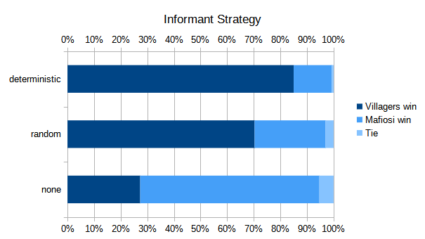

We ran the model 50 times for each combination of the parameters, for a total of 900 runs, with 4 villagers, 2 mafiosi, 1 informant and 1 doctor. These parameters were the mafia strategy (enemy, allied, random), informant strategy (deterministic, random, none), and doctor strategy (deterministic, random). "none" is not a defined strategy for the informant in our code, but for these tests we disabled the informant's ability to make public announcements. If the doctor's strategy is deterministic, they make an announcement after saving one patient.
The doctors' strategy resulted in virtually no difference, with a 62% win rate for the villagers using the random strategy and a 60% win rate using the deterministic strategy.
The mafia's strategy resulted in a small difference, with a 39% win rate for the mafia using the enemy strategy, a 36% win rate using the allied strategy and a 33% win rate using the random strategy.
The informants' strategy resulted in a large difference, with a 27% win rate for the villagers when they are not allowed to make public announcements, a 70% win rate using the random strategy and an 85% win rate using the deterministic strategy.
The doctors' strategy has a relatively small impact on the outcome of the game, since it only impacts when the doctors maka a public announcement, not who they try to save. The person they try to save is picked randomly. Strategies that determine which person the doctors try the save could be explored in the future, and might lead to the doctors playing a more significant part.
The mafia's strategy does seem to affect their chance of success. Voting out villagers who vote against them has a chance of picking out the informant, who will always vote on a mafioso in our model. As can be seen in the graphs above, removing the informant before they make an announcement has a major effect on the outcome of the game, as the 27% win rate shows when informants are not allowed to make public announcements.
The informant's announcements give the villagers a high chance of winning. When an informant announces the identity of a mafia member, that member is immediately voted against by all villagers. However, since villagers can infer that anyone who votes against a mafioso is not in the mafia, they instantly know who the other villagers are. This is an interaction between the simplifications of our model, and therefore we chose to also run experiments where the informant is not allowed to make a public announcement.
The only chance for the mafia, when the informant is allowed to make public announcements, is to kill them before they can make their announcement. With the deterministic strategy the mafia have to do this during the first night, while the random strategy potentially gives them more time.